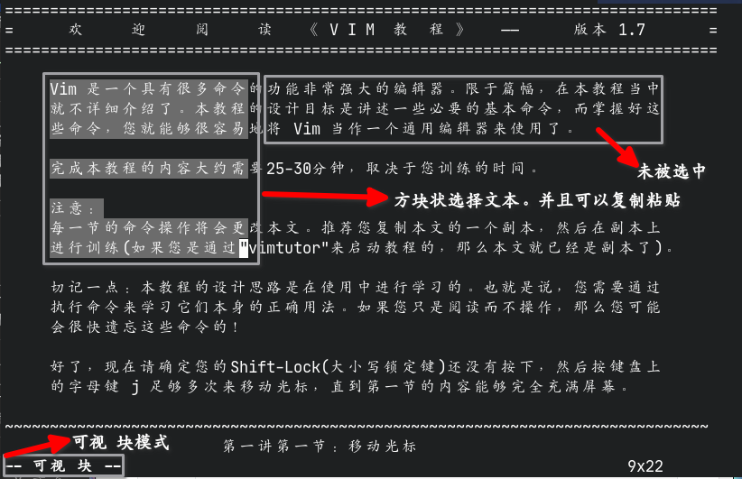

使用Vim/Neovim
Table of Contents
关于我个人是怎么理解使用Vim的
1. 使用Vim/Neovim
1.1. 操作
Vim官方已经有了一份中文的教程了，只需要在终端执行
vimtutor即可查看
1.1.1. 模式介绍
Vim分为多个模式，正常情况下Vim处于 正常模式 。在其他模式下按下 ESC 键可以返 回正常模式。在正常模式下，可以通过各种按键进入其他模式或者执行什么文件的编辑功能。 列表：
| 名称 | 作用 | 进入方法 |
|---|---|---|
| 正常模式 | vim的默认模式，其他模式的入口 | 按下ESC返回 |
| 命令模式 | 可以执行命令、保存文件、退出程序等操作 | 在正常模式输入`:`进入，可以输入命令回车执行 |
| 插入模式 | 用于插入文本到文件中 | 按下`i` `I` `a` `A` `s` `S` `c` `o` `O`等 |
| 替换模式 | 用于输入新的字符并将源字符替换 | 按下`R`进入 |
| 可视模式 | 选择文本 | 按下`v`进入 |
| 可视 块模式 | 选择文本，但是可以以方块状的模式剪贴 | 按下`Ctrl-v`进入 |
| 可视 行模式 | 选择文本，但是直接选择整行（未发现有什么用） | 按下`Shift-v`进入 |
| 选择模式 | 选择文本，按下字符替换掉选择的字符，并进入插入模式 | 按下`v`进入（任意）可视模式后再按下`Ctrl-g`进入选择模式，也有块、行模式的区分，基于进入的是什么可视模式进入 |
1.1.2. 正常模式
移动（官方教程原文）：
^
k 提示： h 的键位于左边，每次按下就会向左移动。
< h l > l 的键位于右边，每次按下就会向右移动。
j j 键看起来很象一支尖端方向朝下的箭头。
v
此操作只能够在正常模式下使用
操作表：
| 按键 | 功能 |
|---|---|
| a | 进入插入模式，插入光标向右移动一字符，在光标左边插入 |
| A | 进入插入模式，插入光标移动到行末，在光标左边插入 |
| cw | 移除一个字符从光标处到单词末（进入插入模式） |
| ce | 移除字符到行末（进入插入模式） |
| d[n]d | 移除n行，不指定n则为一行 |
| [n]dd | 移除n行，不指定n则为一行 |
| dw | 移除一个单词 |
| e | 移动到（下一个）词末 |
| [n]gg | 移动到第n行，不指定n则移动到文件首 |
| [n]G | 移动到第n行，不指定n则移动到文件末 |
| Ctrl-g | 显示文件信息 |
| [n]h | 向左移动n个字符，n默认（不指定时）为1 |
| i | 进入插入模式，插入光标不动，在光标左边插入 |
| I | 进入插入模式，插入光标移动到行首，在光标左边插入 |
| [n]j | 向下移动n行，n默认（不指定时）为1 |
| [n]k | 向上移动n行，n默认（不指定时）为1 |
| [n]l | 向右移动n个字符，n默认（不指定时）为1 |
| n | 搜索事的下一个搜索目标 |
| N | 搜索事的上一个搜索目标 |
| o | 向下新建一行并进入插入模式 |
| O | 向上新建一行并进入插入模式 |
| p | 在光标的右侧粘贴vim缓存的内容，可以通过`c` `d` `y`等方式向缓存区写入内容（独立于系统的剪贴板） |
| P | 效果同`p`但是内容在光标左边粘贴内容 |
| r | 替换一个字符 |
| R | 进入替换模式，输入的字符将会替换文件原有内容 |
| Ctrl-r | 撤销*undo*操作（即撤销撤销操作） |
| s | 基本等同于`c` |
| u | *undo*即撤销之前的操作 |
| v | 进入**可视模式**选择文本（选择好后可以键入 `:w filename` 将选择的内容保存在文件 filename 中） |
| Ctrl-v | 进入**可视 块**模式选择文本，可以以方块状选择文本 |
| Shift-v | 进入**可视 行**模式选择文本，不过是直接一行行地选择文本 |
| [Ctrl/Shift]+v+Ctrl+g | 选择文本，按下字符替换掉选择的字符，并进入插入模式 |
| w | 移动到（下一个）词首，也可以作为worlds单位供其他动作使用 |
| [n]x | 移除光标所处位置的（n个字符，默认为1个）字符，但不会进入插入模式 |
| y | 复制选中的内容到缓存区 |
| yy | 复制光标所在行的内容 |
| ? | 搜索文件内容时反过来搜索（从文件末向文件首排列搜索目标） |
| % | 移动光标到符合匹配的一对字符（括号类、引号类）的另一个，如由开括号跳转到收括号 |
| $ | 跳转到行末 |
| ^ | 跳转到行首 |
| 0 | 跳转到行首 |
| # | 在文件中查找光标所在位置的单词 |
| * | 同 # |
| F1 | 打开一个Vim的帮助窗口（教程纯英文） |
| [n]Ctrl+a | 在遇到数字时会自动将数字自增n（不指定时n默认为1） |
| [n]Ctrl+x | 在遇到数字时会自动将数字自减n（不指定时n默认为1） |
1.1.3. 命令模式
较为常用的命令表：
在命令后添加 ! 意思为强制执行
| 命令 | 作用 |
|---|---|
| :w | 保存 |
| :w! | 强制保存 |
| :q | 退出 |
| :q! | 强制（不保存）退出 |
| :wq | 保存并退出 |
| :a | 在文件的末尾追加回车后输入的字符，按下 Esc 返回 |
| :r filename | 读取文件 filename 的内容并追加到文件中 |
| : s/a/b/g | 替换光标所在行中的所有 a 为 b |
| :%s/a/b/g | 替换文件中的所有 a 为 b |
| :%s/a/b | 替换文件中的每行的第一个 a 为 b |
| :#,#s/a/b | 替换文件中第 # 行到第 # 行的每行的第一个 a 为 b |
| :#,#s/a/b/g | 替换文件中第 # 行到第 # 行的所有 a 为 b |
| :sp | 横向分割出一个新窗口（并打开命令后面指定的文件） |
| :vsp | 纵向分割出一个新窗口（并打开命令后面指定的文件） |
| :tabnew | 新建标签页（并打开命令后面指定的文件） |
| :tabNext | 下一个标签页 |
| :set [setting] | 设置编辑器设置的setting项，如 set wrap 设置打开文件自动折行 |
| :setfiletype type | 设置文件类型为指定的 type |
| :!command | 调用shell执行外部命令 command |
| :bn | 切换窗口到下一个buffer（Vim打开文件若只关闭窗口文件还会以Buffer形式在后台打开 |
1.1.4. 插入模式
只不过是简单地输入文本并插入到文件中罢了
1.1.5. 替换模式
同插入模式，只不过内容会被直接替换
1.1.6. 可视模式
从原光标处起移动光标选定区域，选定的内容可以直接输入 y 复制，也可以直接输入
:w 保存内容到指定的文件中（实际上显示的真正命令应该为 :'\<,'\>w ）

1.2. 配置
1.2.1. vim
Vim的主配置文件可以是 ~/.vimrc 也可以是 ~/.vim/vimrc 。
1.2.2. neovim
Neovim的主配置文件是 ~/.config/nvim/init.vim 。
1.2.3. 配置目录结构
Vim/Neovim的配置文件夹结构基本一致。基本结构如下
$ tree2 -L 4 .config/nvim .config/nvim ├── init.vim ├── pack │ └── github │ ├── opt │ └── start ├── plugin └── undo 18 directories, 14 files
其中pack文件夹下新建一个任意名字的文件夹，里面新建 opt 与 start 两个文件夹。
pack/dir/start 存放vim启动就要加载的插件（仓库），而 pack/dir/opt 存放的是
vim启动不自动加载的插件
undo文件夹是个人建立的，用于使用vim功能 撤销（修改）记录永久化 ，即在退出vim 后仍然保存着修改的历史记录
plugin文件夹也用于存放配置文件，名称格式为 任意前缀.vim ，可以将配置文件分块存
储
1.2.4. 配置语法
- 映射
- command
command的用法：
command mp MarkdownPreview
在本例子中，mp被映射为
MarkdownPreview，所以在普通模式中输入:后再输入mp就能够实现与输入MarkdownPreview同样的效果 - noremap
noremap的用法（狭义）：
noremap z <Cmd>bn<CR>
在本例子中，倘若vim处于正常模式，键入
z则会以命令行模式执行bn命令其实它还可以这么表达：
noremap z :bn<CR>
很明显，noremap的键位映射就是在按下那个按键后模拟用户的输入执行什么操作，即进入 命令行模式输入
bn并回车，而不能够直接表达的字符则用<>表示表示符号 实际含义 \<C-\> Ctrl + 按键 \<M-\> Alt + 按键 \<Esc\> Esc键 \<SPACE\> 回车 \<TAB\> Tab键 \<Fn\> Fn键，n为数字 - inoremap
inoremap的用法同noremap，只不过使用的模式是插入模式。也就是说插入模式下也可以有 快捷键。如果想要输入原本的字符，就只需要等待一两秒即可。也就是说我们可以使用以下 代码实现简单的括号补全：
inoremap ' ''<ESC>i inoremap " ""<ESC>i inoremap ( ()<ESC>i inoremap [ []<ESC>i inoremap { {<CR>}<ESC>O inoremap < <><ESC>i "inoremap 「 「」<ESC>i inoremap （ （）<ESC>i
- command
- 其他（十分有用的）功能
实现文件退出后保存浏览进度：
au BufReadPost * if line("'\"") > 1 && line("'\"") <= line("$") | exe "normal! g'\"" | endif " 记忆文件上次打开位置实现fcitx输入法在退出插入模式时自动切换英文：
let s:fcitx_cmd = executable("fcitx5-remote") ? "fcitx5-remote" : "fcitx-remote" autocmd InsertLeave * let b:fcitx = system(s:fcitx_cmd) | call system(s:fcitx_cmd.' -c') autocmd InsertEnter * if exists('b:fcitx') && b:fcitx == 2 | call system(s:fcitx_cmd.' -o') | endif " 退出插入模式时自动切换到英文实现撤销记录持久化：
if has('persistent_undo') "check if your vim version supports it set undofile "turn on the feature set undodir=$HOME/.vim/undo "directory where the undo files will be stored endif提示：里面的
\$HOME/.vim/undo可以替换为任意你想要的 目录 ，在neovim中我会将 其替换为 \$HOME/.config/nvim/undo
1.3. 我的配置
插件安装脚本：
#下载Vim插件 mkdir -p ~/.config/nvim/pack/github/start mkdir -p ~/.config/nvim/pack/github/opt mkdir -p ~/.config/nvim/undo mkdir -p ~/.config/nvim/plugin mkdir -p ~/.vim #nerdtree目录树 git clone https://github.com/preservim/nerdtree.git ~/.config/nvim/pack/github/start/nerdtree #airline状态栏 git clone https://github.com/vim-airline/vim-airline.git ~/.config/nvim/pack/github/start/vim-airline #space-vim-dark主题 git clone https://github.com/liuchengxu/space-vim-dark.git ~/.config/nvim/pack/github/start/space-vim-dark #vim-airline-theme状态栏主题 git clone https://github.com/vim-airline/vim-airline-themes.git ~/.config/nvim/pack/github/start/vim-airline-themes #vim-which-key git clone https://github.com/liuchengxu/vim-which-key.git ~/.config/nvim/pack/github/start/im-which-key #mathjax-support-for-mkdp git clone https://github.com:iamcco/mathjax-support-for-mkdp.git ~/.config/nvim/pack/github/start/mathjax-support-for-mkdp #coc.nvim自动补全 git clone https://github.com/neoclide/coc.nvim.git ~/.config/nvim/pack/github/start/coc.nvim #emmet-vim git clone https://github.com/mattn/emmet-vim.git ~/.config/nvim/pack/github/start/emmet-vim #markdown-preview.nvim预览markdown文件插件 git clone https://github.com/iamcco/markdown-preview.nvim.git ~/.config/nvim/pack/github/start/markdown-preview.nvim #vim-table-mode编辑table时自动快速对齐表格 git clone https://github.com/dhruvasagar/vim-table-mode.git ~/.config/nvim/pack/github/start/vim-table-mode #auto-pairs成双成对，在vim中自动补全括号等，但这里设置为默认不加载，将下面的 opt 改为 start 或者移动 opt 下的目录到 start 就好了 git clone https://github.com/jiangmiao/auto-pairs.git ~/.config/nvim/pack/github/opt/auto-pairs #nerdcommenter代码注释 git clone https://github.com/preservim/nerdcommenter.git ~/.config/nvim/pack/github/start/nerdcommenter #vim-mundo代码注释 git clone https://github.com/simnalamburt/vim-mundo.git ~/.config/nvim/pack/github/opt/vim-mundo ln -sf /home/$USER/.config/nvim/init.vim /home/$USER/.vim/vimrc ln -sf /home/$USER/.config/nvim/pack /home/$USER/.vim/pack ln -sf /home/$USER/.config/nvim/plugin /home/$USER/.vim/plugin ln -sf /home/$USER/.config/nvim/undo /home/$USER/.vim/undo cd ~/.config/nvim/pack/github/start/markdown-preview.nvim/ yarn install
~/.config/nvim/init.vim or ~/.vim/vimrc or ~/.vimrc 配置文件（主配置文件，
保存基本设置）：
" ==================================================
"
" 基本设置
"
" ==================================================
set nocompatible
" 关闭 vi 兼容模式
syntax on
" 自动语法高亮
set autochdir
" 自动切换当前目录为当前文件所在的目录
set autoread
" 打开文件监视。如果在编辑过程中文件发生外部改变(比如被别的编辑器编辑了)，就会发出提示
set scrolloff=3
" 设置光标距离顶部和底部的固定位置
set magic
" 设置魔术
set smartindent
" 开启新行时使用智能自动缩进
set noeb
set noexpandtab
" 不要用空格代替制表符
set backspace=indent,eol,start
set cmdheight=1
" 设定命令行的行数为 1
set nowrap
"不折行
set sidescroll=1
"流畅扩展
filetype on
"检测文件类型
filetype plugin indent on
" 开启插件
" TAB
" ==================================================
set shiftwidth=8
" 设定 << 和 >> 命令移动时的宽度为 8
set softtabstop=8
" 使得按退格键时可以一次删掉 8 个空格
set tabstop=8
" 设定 tab 长度为 8
" 行号
" ==================================================
" set number
set nu
" 显示行号
set rnu
" 显示相对行号
" 搜索
" ==================================================
set ignorecase smartcase
" 搜索时忽略大小写，但在有一个或以上大写字母时仍保持对大小写敏感
set incsearch
" 输入搜索内容时就显示搜索结果
" 状态栏
" ==================================================
set ruler
" 打开状态栏标尺
set laststatus=1
" 显示状态栏 (默认值为 1, 无法显示状态栏)
set statusline=%F%m%r%h%w\ [FORMAT=%{&ff}]\ [TYPE=%Y]\ [POS=%l,%v][%p%%]\ %{strftime(\"%d/%m/%y\ -\ %H:%M\")}
set statusline=[%F]%y%r%m%*%=[Line:%l/%L,Column:%c][%p%%]
" 设置在状态行显示的信息
" 临时文件
" ==================================================
set noswapfile
" 禁止生成临时文件
set nobackup
" 覆盖文件时不备份
set backupcopy=yes
" 设置备份时的行为为覆盖
set hidden
" 允许在有未保存的修改时切换缓冲区，此时的修改由 vim 负责保存
" ==================================================
"
" 功能脚本
"
" ==================================================
au BufReadPost * if line("'\"") > 1 && line("'\"") <= line("$") | exe "normal! g'\"" | endif
" 记忆文件上次打开位置
let s:fcitx_cmd = executable("fcitx5-remote") ? "fcitx5-remote" : "fcitx-remote"
autocmd InsertLeave * let b:fcitx = system(s:fcitx_cmd) | call system(s:fcitx_cmd.' -c')
autocmd InsertEnter * if exists('b:fcitx') && b:fcitx == 2 | call system(s:fcitx_cmd.' -o') | endif
" 退出插入模式时自动切换到英文
if has('persistent_undo') "check if your vim version supports it
set undofile "turn on the feature
set undodir=$HOME/.config/nvim/undo "directory where the undo files will be stored
endif
" ==================================================
"
" 配置多语言环境
"
" ==================================================
if has("multi_byte")
" UTF-8 编码
set encoding=utf-8
set termencoding=utf-8
set formatoptions+=mM
set fencs=utf-8,gbk
if v:lang =~? '^\(zh\)\|\(ja\)\|\(ko\)'
set ambiwidth=double
endif
if has("win32")
source $VIMRUNTIME/delmenu.vim
source $VIMRUNTIME/menu.vim
language messages zh_CN.utf-8
endif
else
echoerr "Sorry, this version of (g)vim was not compiled with +multi_byte"
endif
plugin/keymap.vim 配置文件（插件设置）：
" ==================================================
"
" 自定义快捷命令
"
" ==================================================
" 自定义命令(命令模式)
" ==================================================
command W w
command Q q
command WQ wq
command QW wq
command Wq wq
command Qw wq
" noremap(普通模式使用)
" ==================================================
noremap <SPACE>s :w<CR>
noremap <SPACE>q :wq<CR>
noremap <SPACE>Q :q!<CR>
autocmd Filetype markdown noremap <SPACE>pp :MarkdownPreview<CR>
autocmd Filetype markdown noremap <SPACE>pP :MarkdownPreviewStop<CR>
autocmd Filetype markdown noremap <SPACE>ptt :TableModeToggle<CR>
autocmd Filetype markdown noremap <SPACE>ptr :TableModeRealign<CR>
autocmd Filetype markdown noremap <F3> <Plug>MarkdownPreview
" 开始预览
autocmd Filetype markdown noremap <F4> <Plug>MarkdownPreviewStop
" 关闭预览
"noremap <C-[> /<++><CR>:nohlsearch<CR>c4l
noremap <SPACE><Tab> <Cmd>bn<CR>
noremap <Tab> <C-w>w
autocmd Filetype c noremap <F3> <Cmd>chdir ../<CR><Cmd>set noautochdir<CR>
autocmd Filetype c noremap <F4> <Cmd>!make;make clean<CR>
autocmd Filetype c noremap <F5> <Cmd>terminal bin/main<CR>
" inoremap(插入模式使用)
" ==================================================
inoremap ' ''<ESC>i
inoremap " ""<ESC>i
inoremap ( ()<ESC>i
inoremap [ []<ESC>i
inoremap { {<CR>}<ESC>O
inoremap < <><ESC>i
"inoremap 「 「」<ESC>i
inoremap （ （）<ESC>i
"补全
"inoremap <C-[> <Esc>/<++><CR>:nohlsearch<CR>c4l
autocmd Filetype markdown inoremap <F3> <Plug>MarkdownPreview
" 开始预览
autocmd Filetype markdown inoremap <F4> <Plug>MarkdownPreviewStop
" 关闭预览
plugin/plugins.vim 配置文件（插件设置）：
" ==================================================
"
" 插件设置
"
" ==================================================
" nerdtree
" ==================================================
let NERDTreeWinPos='left'
"设置在 vim 左侧显示
let NERDTreeWinSize=20
"设置宽度为 20
let g:NERDTreeDirArrowExpandable = '▸'
let g:NERDTreeDirArrowCollapsible = '▾'
" autocmd vimenter * NERDTree
wincmd w
autocmd VimEnter * wincmd w
autocmd StdinReadPre * let s:std_in=1
autocmd VimEnter * if argc() == 1 && isdirectory(argv()[0]) && !exists("s:std_in") | exe 'NERDTree' argv()[0] | wincmd p | ene | endif
autocmd StdinReadPre * let s:std_in=1
" autocmd VimEnter * if argc() == 0 && !exists("s:std_in") | NERDTree | endif
autocmd bufenter * if (winnr("$") == 1 && exists("b:NERDTree") && b:NERDTree.isTabTree()) | q | endif
" 设置 F2 为打开或者关闭的快捷键
noremap <F2> :NERDTreeToggle<CR>
inoremap <F2> <Cmd>:NERDTreeToggle<CR>
" vim-airline
" ==================================================
set laststatus=2
let g:airline_theme="onedark"
"这个是安装字体后 必须设置此项"
" let g:airline_powerline_fonts = 1
" 打开tabline功能,方便查看Buffer和切换,省去了minibufexpl插件
let g:airline#extensions#tabline#enabled = 1
let g:airline#extensions#tabline#buffer_nr_show = 1
"设置切换Buffer快捷键"
noremap <C-tab> :bn<CR>
noremap <C-s-tab> :bp<CR>
" 关闭状态显示空白符号计数
let g:airline#extensions#whitespace#enabled = 0
let g:airline#extensions#whitespace#symbol = '!'
" 设置consolas字体"前面已经设置过
"set guifont=Consolas\ for\ Powerline\ FixedD:h11
if !exists('g:airline_symbols')
let g:airline_symbols = {}
endif
" powerline symbols
" let g:airline_left_sep = ' '
" let g:airline_left_alt_sep = ' '
" let g:airline_right_sep = ' '
" let g:airline_right_alt_sep = ' '
" let g:airline_symbols.branch = ''
" let g:airline_symbols.colnr = ' :'
" let g:airline_symbols.readonly = ''
" let g:airline_symbols.linenr = ' :'
" let g:airline_symbols.maxlinenr = '☰ '
let g:airline_symbols.maxlinenr = 'ML '
" let g:airline_symbols.dirty='⚡'
" old vim-powerline symbols
" let g:airline_left_sep = '⮀'
" let g:airline_left_alt_sep = '⮁'
" let g:airline_right_sep = '⮂'
" let g:airline_right_alt_sep = '⮃'
" let g:airline_symbols.branch = '⭠'
" let g:airline_symbols.readonly = '⭤'
" vim-theams
" ==================================================
syntax enable
colorscheme space-vim-dark
" Markdown
" ==================================================
" nmap <F3> <Plug>MarkdownPreview " 开始预览
" nmap <F4> <Plug>MarkdownPreviewStop " 关闭预览
" nmap <F5> <Plug>MarkdownPreviewToggle " 切换预览
" nerdcommenter
" ==================================================
" Create default mappings
let g:NERDCreateDefaultMappings = 1
" Add spaces after comment delimiters by default
let g:NERDSpaceDelims = 1
" Use compact syntax for prettified multi-line comments
let g:NERDCompactSexyComs = 1
" Align line-wise comment delimiters flush left instead of following code indentation
let g:NERDDefaultAlign = 'left'
" Set a language to use its alternate delimiters by default
let g:NERDAltDelims_java = 1
" Add your own custom formats or override the defaults
let g:NERDCustomDelimiters = { 'c': { 'left': '// ' } }
" let g:NERDCustomDelimiters = { 'c': { 'left': '/*','right': '*/' } }
" Allow commenting and inverting empty lines (useful when commenting a region)
let g:NERDCommentEmptyLines = 1
" Enable trimming of trailing whitespace when uncommenting
let g:NERDTrimTrailingWhitespace = 1
" Enable NERDCommenterToggle to check all selected lines is commented or not
let g:NERDToggleCheckAllLines = 1
plugin/markdown-quick-input.vim 配置文件（插件设置）：
" ================================================== " " 自定义markdown快捷输入命令 " " ================================================== " 查找标记点 " ================================================== autocmd Filetype markdown inoremap =f <Esc>/<++><CR>:nohlsearch<CR>c4l autocmd Filetype markdown inoremap == <Esc>/<++><CR>:nohlsearch<CR>c4l " 一级标题 " ================================================== autocmd Filetype markdown inoremap =1 <Esc>o#<Space><Enter><Enter><++><Esc>2kA " 二级标题 " ================================================== autocmd Filetype markdown inoremap =2 <Esc>o##<Space><Enter><Enter><++><Esc>2kA " 三级标题 " ================================================== autocmd Filetype markdown inoremap =3 <Esc>o###<Space><Enter><Enter><++><Esc>2kA " 四级标题 " ================================================== autocmd Filetype markdown inoremap =4 <Esc>o####<Space><Enter><Enter><++><Esc>2kA " 五级标题 " ================================================== autocmd Filetype markdown inoremap =5 <Esc>o#####<Space><Enter><Enter><++><Esc>2kA " 六级标题 " ================================================== autocmd Filetype markdown inoremap =6 <Esc>o######<Space><Enter><Enter><++><Esc>2kA " 小点 " ================================================== autocmd Filetype markdown inoremap =- <Esc>o-<Space> autocmd Filetype markdown inoremap =. <Esc>o-<Space> " 斜体文本 " ================================================== autocmd Filetype markdown inoremap =i **<++><Esc>F*i " 粗体文本 " ================================================== autocmd Filetype markdown inoremap =s ****<++><Esc>F*hi " 标注 " ================================================== autocmd Filetype markdown inoremap =m ``<++><Esc>F`i " 粗斜体文本 " ================================================== autocmd Filetype markdown inoremap =e ******<++><Esc>F*hhi " 下划线 " ================================================== autocmd Filetype markdown inoremap =d <Esc>o~~~~<++><Esc>F~hi " 高亮 " ================================================== autocmd Filetype markdown inoremap =h ====<++><Esc>F=hi " 插入图片 " ================================================== autocmd Filetype markdown inoremap =p <++><Esc>F[a " 插入链接 " ================================================== autocmd Filetype markdown inoremap =a [](<++>)<++><Esc>F[a " 插入分隔线 " ================================================== autocmd Filetype markdown inoremap =n <Esc>o---<Enter><Enter> " 插入代码块 " ================================================== autocmd Filetype markdown inoremap =c <Esc>o```<Enter><++><Enter>```<Enter><Enter><++><Esc>4kA " 表格操作 " ================================================== autocmd Filetype markdown inoremap =T <Esc>o\|\|<++>\|<Enter>\|:-:\|:-:\|<Enter>\|<++>\|<++>\|<Esc>2kI<Esc>li autocmd Filetype markdown inoremap =t <Esc>o\|\|<++>\|<Esc>5hi
plugin/c-qi.vim 配置文件（c语言快速补全）：
" ==================================================
"
" 自定义C语言命令
"
" ==================================================
" /*<Space><++><Space>*/
" \/\*<Space><++><Space>\*\/
autocmd Filetype c nnoremap ]] <Esc>/\/\*<Space><++><Space>\*\/<CR><Cmd>nohlsearch<CR>v9l<C-g>
autocmd Filetype c nnoremap ]= <Esc>/\/\*<Space><++><Space>\*\/<CR><Cmd>nohlsearch<CR>v9l<C-g>
autocmd Filetype cpp inoremap ]] <Esc>/\/\*<Space><++><Space>\*\/<CR><Cmd>nohlsearch<CR>v9l<C-g>
autocmd Filetype cpp inoremap ]= <Esc>/\/\*<Space><++><Space>\*\/<CR><Cmd>nohlsearch<CR>v9l<C-g>
" autocmd Filetype c inoremap ]
" 注释
autocmd Filetype c inoremap ]/ <Esc>A<Space><Space><Space><Space>/* */<Esc>3ha
autocmd Filetype c inoremap ]. <Esc>O/* */<Esc>3ha
autocmd Filetype cpp inoremap ]/ <Esc>A<Space><Space><Space><Space>/* */<Esc>3ha
autocmd Filetype cpp inoremap ]. <Esc>O/* */<Esc>3ha
" if
autocmd Filetype c inoremap ]i <Esc>oif<Space>(1<Esc>m1a)<Space>{<Esc>o/*<Space><++><Space>*/<Enter>}<Enter>/*<Space><++><Space>*/<Esc>`1v<C-g>
" else if
autocmd Filetype c inoremap ]ei <Esc>/}<CR>:nohlsearch<CR>A else<Space>if<Space>(1<Esc>m1a)<Space>{<Esc>o/*<Space><++><Space>*/<Enter>}<Esc>`1v<C-g>
" else
autocmd Filetype c inoremap ]ee <Esc>/}<CR>:nohlsearch<CR>A else<Space>{<Esc>o/*<Space><++><Space>*/<Esc>m1a<Enter>}<Esc>`1v9h<C-g>
" switch
autocmd Filetype c inoremap ]ss <Esc>oswitch<Space>(1<Esc>m1a)<Space>{<Enter><Backspace>case<Space>1:<Enter>/*<Space><++><Space>*/<Enter>break;<Enter>default:<Enter>/*<Space><++><Space>*/<Enter>break;<Enter>}<Enter>/*<Space><++><Space>*/<Esc>`1v<C-g>
autocmd Filetype c inoremap ]sc <Esc>/break;<CR><Cmd>nohlsearch<CR>ocase<Space>1<Esc>m1a:<Enter>/*<Space><++><Space>*/<Enter>break;<Esc>`1hv<C-g>
" while
autocmd Filetype c inoremap ]w <Esc>owhile<Space>(1<Esc>m1a)<Space>{<Enter>/*<Space><++><Space>*/<Enter>}<Enter>/*<Space><++><Space>*/<Esc>`1v<C-g>
" for
autocmd Filetype c inoremap ]f <Esc>ofor<Space>(int<Space>i<Esc>m1a;<Space>i<Space><<Space>1/*<Space><++><Space>*/;<Space>i++)<Space>{<Esc>o/*<Space><++><Space>*/<Enter>}<Enter>/*<Space><++><Space>*/<Esc>`1v<C-g>
" struct
autocmd Filetype c inoremap ]t <Esc>ostruct<Space>/<Esc>m1a*<Space><++><Space>*/<Space>{<Enter>/*<Space><++><Space>*/<Space>/*<Space><++><Space>*/;<Enter><Backspace>}/*<Space><++><Space>*/;<Enter>/*<Space><++><Space>*/<Esc>`1v9l<C-g>
autocmd Filetype cpp inoremap ]t <Esc>ostruct<Space>/<Esc>m1a*<Space><++><Space>*/<Space>{<Enter>/*<Space><++><Space>*/<Space>/*<Space><++><Space>*/;<Enter><Backspace>}/*<Space><++><Space>*/;<Enter>/*<Space><++><Space>*/<Esc>`1v9l<C-g>
" functon
autocmd Filetype c inoremap ]mm <Esc>o/<Esc>m1a*<Space><++><Space>*/<Space>/*<Space><++><Space>*/(/*<Space><++><Space>*/)<Enter>{<Enter>/*<Space><++><Space>*/<Enter>return<Space>/*<Space><++><Space>*/;<Enter>}<Enter><Esc>`1v9l<C-g>
autocmd Filetype c inoremap ]mn <Esc>/^}<CR><Cmd>nohlsearch<CR>o<Enter>/<Esc>m1a*<Space><++><Space>*/<Space>/*<Space><++><Space>*/(/*<Space><++><Space>*/)<Enter>{<Enter>/*<Space><++><Space>*/<Enter>return<Space>/*<Space><++><Space>*/;<Enter><Backspace>}<Enter><Esc>`1v9l<C-g>
autocmd Filetype c inoremap ]ms <Esc>/^}<CR><Cmd>nohlsearch<CR>o<Enter>static<Space>/<Esc>m1a*<Space><++><Space>*/<Space>/*<Space><++><Space>*/(/*<Space><++><Space>*/)<Enter>{<Enter>/*<Space><++><Space>*/<Enter>return<Space>/*<Space><++><Space>*/;<Enter><Backspace>}<Enter><Esc>`1v9l<C-g>
autocmd Filetype c inoremap ]mi <Esc>$m1<Esc>?)\n{<CR>yyG?^#include<CR><Cmd>nohlsearch<CR>o<ESC>pA;<Esc>`1